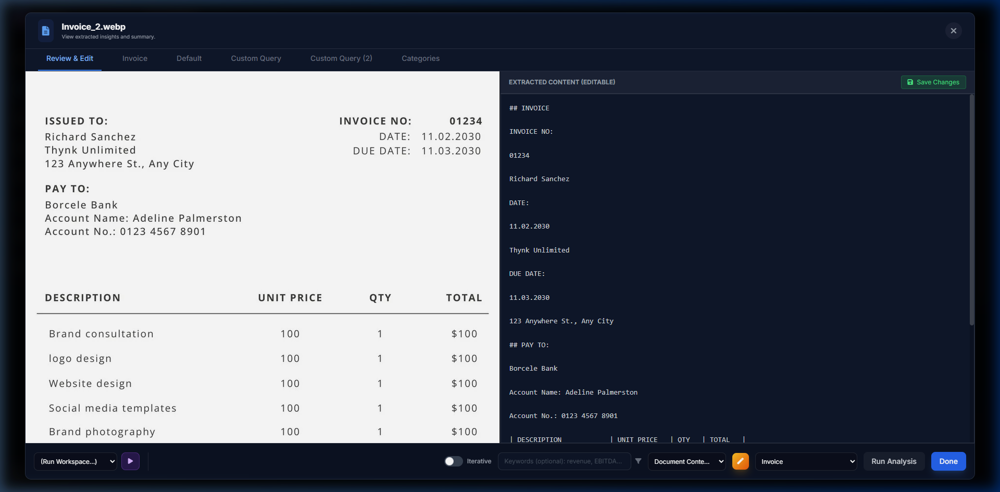
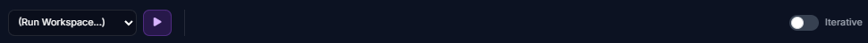
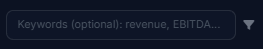
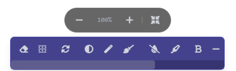

Document Viewer & Analysis
The Document Viewer is heavily tailored for in-depth analysis, featuring a split-pane layout to compare source documents directly with AI-generated outputs.

The Split View Interface
Clicking on any document in the Dashboard opens the Document Viewer. The screen is vertically split:
- Left Pane (Source): Displays the original PDF, Markdown extraction, or Image rendering. Use the tabs at the top to toggle between the raw file and the VLM/OCR parsed text structure.
- Right Pane (Analysis): Displays the results of AI prompts, workspace pipelines, and extracted key-value data.
Analysis Execution & Data Extraction
Running Prompts & Workspaces
In the right-hand action bar, you can:
- Select an existing System Prompt from your library.
- Write a Custom Ad-hoc prompt for immediate execution (e.g., "Find all mentions of litigation").
- Select an entire Workspace Pipeline to execute sequentially on the document.
Iterative Refinement (Relook Pass)
For complex extraction tasks, a single pass by the AI might miss subtle details or formatting constraints. You can toggle the Iterate switch before running a prompt.

- When enabled, Parsifi will take the initial output and perform a secondary "refinement pass" using the tool's configured Refinement Prompt to fix errors or tighten the extraction.
- This takes slightly longer but ensures the highest possible data accuracy.
Targeted Content & Smart Chunking
Sometimes parsing a 1,000-page PDF entirely is unnecessary. You can use Targeted Content Extraction to filter what the AI reads.
- Manual Targeting: Highlight a section of the parsed markdown that contains the information you need, click "Target Selection", and run your analysis. The AI will only "see" your highlighted text, saving immense time and tokens.
- Smart Keyword Chunking: Enter a list of keywords (e.g., "Indemnity, Liability, Force
Majeure"). Parsifi will scan the document, extract only the sections surrounding those keywords, and
feed the condensed result into the AI prompt.

Image Processing Controls
If you uploaded a document using the Vision VLM pipeline, you gain access to powerful Image Processing tools on the left pane. These tools modify the image before it is repeatedly requested by the VLM for analysis.

- Eraser Tool: Draw over sensitive information (like SSNs or signatures) to permanently blank them out before AI processing. Provides an extra layer of privacy.
- Deskew: Automatically straighten crooked scans to improve VLM reading accuracy.
- Binarize / Contrast: Convert faded, low-quality receipt scans into high-contrast black and white images, dramatically improving text recognition.
- Crop: Manually crop out the margins or irrelevant headers of a document to focus the AI on the core tabular data.